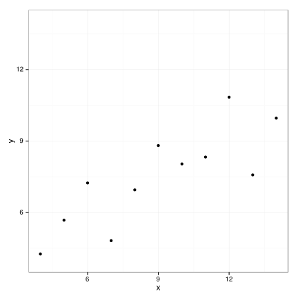
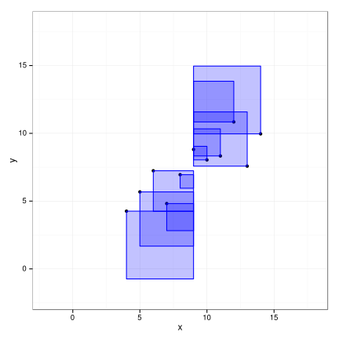
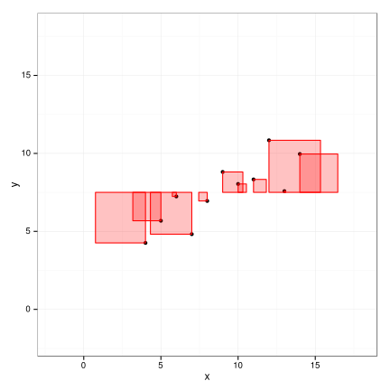
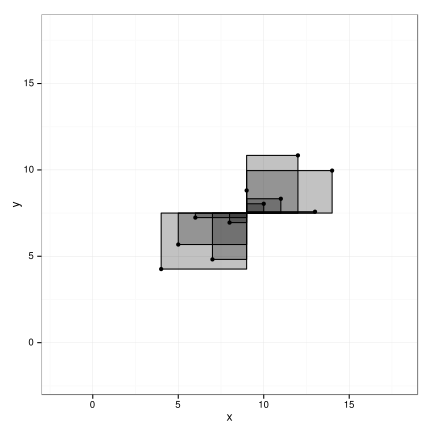
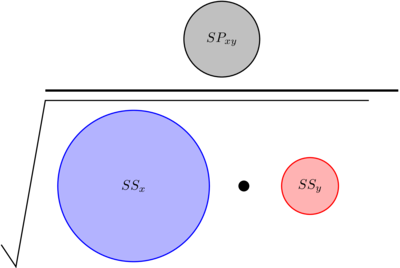
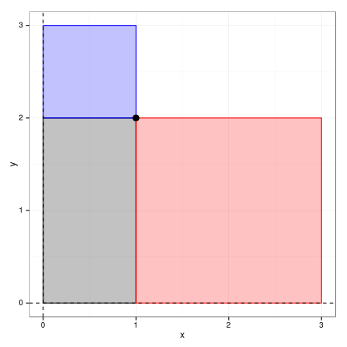

anscombe
Introduction
I'm currently enrolled in the Coursera class, Statistics One, taught by Professor Andrew Conway of Princeton University. Within the first couple of weeks, we learned about Pearson's correlation coefficient, r, which can be calculated in a couple of ways. In words, the coefficient describes "the variance in x and y together vs. the individual variance in x and y separately."
We also covered some necessary assumptions about the data to be able to rely on the calculated coefficient with respect to deriving meaningful interpretations from it. The biggies were a normally distributed data set and homoscedasticity (the distance between each point a best fit line should not correlate with the x and y points themselves). Checking for homoscedasticity pretty easy, at least in obvious cases of not meeting this criteria:
- Create a linear model; the slope of this best fit line will be \(r \times (SD_y/SD_x)\).
- Calculate the error between the line's predictions and each y point
- Plot the actual x values vs. each point's corresponding error from above
- You want a nice, random, scattering of points, equally centered around the line y = 0 (which means that the average error is 0). If you see the distances growing or shrinking as you move left to right, you have some sort of relationship between x and the error, indicating that something's not right.
To better illustrate violations in the normality and homoscedasticity assumptions, Prof. Conway used Ancsombe's Quartet, which was fascinating to me. Here's an illustration:1

The properties are quite intriguing! The mean and variance of both x and y, the
correlation coefficient (r), and the best fit linear regression line are all the same
(well, some are exact; others differ by a very slight decimal value).
I get that the math apparently works out for these points to have the same variance, correlation coefficients, and regression line formulas… but how?
Visualiztion -> better understanding
I'm a huge fan of data visualization, as well as simply working things out in different ways to better comprehend what I'm dealing with. I've used correlation coefficients and regression models at work with programs like Minitab as well as R, but this was a fantastic opportunity to really understand how it's calculated and what it meant. I started by simply going through the math, and then thought it would be fun to visually show why Anscombe's Quartet works out how it does. What follows is what I did!
We want to track the variance between paired x and y values vs. their individual variances. For the numerator (paired variance), we want the cross product of x and y variance (denoted \(SP_{xy}\); in other words, we want to multiply each individual x variance (from the mean) the corresponding y value's variance, and the sum the result, which would look like this:
\[ \sum_{i=1}^n (x_i - \mu_x) (y_i - \mu_y) \]
In the denominator, we'll have the overall variance in x times the overall variance in y; sum of squared error is used, which for x would be:
\[ SS_x = \sum_{i=1}^n (x - \mu_x)^2 \]
Now, in the denominator, \(SS_x\) and \(SS_y\) are already squared (so a total effect of being on the order of \(x^4\)), while in the numerator, we just have the equivalent of \(xy\), so a squared term.Thus, we'll take the square root of the denominator, and end up with our final formula for r:
\[ \frac{\sum_{i=1}^n (x_i - \mu_x) (y_i - \mu_y)}{\sqrt {\sum_{i=1}^n (x_i - \mu_x)^2 \sum_{i=1}^n (y_i - \mu_y)^2}} \]
Now, onto the visualizations! First, I wanted to visualize \(SS_x\) and \(SS_y\). R comes with Anscombe's data as a built-in object, so I just started with the first set (rearranged a bit from it's default format in R), and plotted the points:
library(reshape2) library(ggplot2) # create a re-arranged data frame from Anscombe's quartet data <- data.frame(x = melt(anscombe[, 1:4])$value) data$y <- melt(anscombe[, 5:8])$value data$group <- factor(rep(c("a", "b", "c", "d"), each = nrow(data)/4)) # for now, let's just play with the first set data_sub <- data[data$group == "a", ] p <- ggplot(data_sub, aes(x = x, y = y)) + geom_point() p <- p + scale_x_continuous(limits = c(4, 14)) + scale_y_continuous(limits = c(4, 14)) p <- p + theme_bw() p

Next, let's create a plot showing the total variance in x at each point. This will be a
square with sides of length \(x_i - \mu_x\):
p <- ggplot(data_sub, aes(x = x, y = y)) + geom_point() p <- p + geom_rect(aes(xmin = x, xmax = mean(data$x), ymin = y, ymax = y + (x - mean(data$x))), alpha = 0.24, colour = "blue", fill = "blue") p <- p + scale_x_continuous(limits = c(-2, 18)) + scale_y_continuous(limits = c(-2, 18)) p <- p + theme_bw() p

Similarly, we can do the same thing with y:
p <- ggplot(data_sub, aes(x = x, y = y)) + geom_point() p <- p + geom_rect(aes(xmin = x, xmax = x + (y - mean(data$y)), ymin = y, ymax = mean(data$y)), alpha = 0.24, colour = "red", fill = "red") p <- p + scale_x_continuous(limits = c(-2, 18)) + scale_y_continuous(limits = c(-2, 18)) p <- p + theme_bw() p

So var, the boxes have been square, as we simply want to illustrate \((x_i - \mu_x)^2\) (and
similarly, same for y) for each visualization. When it comes to illustrating the
covariance, we need the width of each box to be \(x_i - \mu_x\) and the height to be
\(y_i - \mu_y\). Now we'll end up with areas representing the collective distance from
both means for each point:
p <- ggplot(data_sub, aes(x = x, y = y)) + geom_point() p <- p + geom_rect(aes(xmin = x, xmax = mean(data$x), ymin = y, ymax = mean(data$y)), alpha = 0.24, colour = "black", fill = "black") p <- p + scale_x_continuous(limits = c(-2, 18)) + scale_y_continuous(limits = c(-2, 18)) p <- p + theme_bw() p

So, we have all of the individual pieces… now how to represent our formula for Pearson's correlation coefficient?
\[ \frac{\sum_{i=1}^n (x_i - \mu_x) (y_i - \mu_y)}{\sqrt {\sum_{i=1}^n (x_i - \mu_x)^2 \sum_{i=1}^n (y_i - \mu_y)^2}} \]
The numerator is easy; we already have rectangles representing the area, \((x_i -
\mu_x)(y_i - \mu_y)\). But… we need to somehow multiply our x and y squares (the
blue and red above) together, and then take the square root. Thinking about how our
squares are representing the data, we don't really have \((x_i - \mu_x)^2\) to worry
about, but just \(l_{xi}^2\), where \(l_{xi}\) is the length of each \(x_i - \mu_x\) square's side. Thus, if
we expand things out a bit, we'll get:
\[ \sqrt{(l_{x1}^2 + l_{x2}^2 + ... + l_{xn}^2)(l_{y1}^2 + l_{y2}^2 + ... + l_{yn}^2)} \]
It's a tad tough to square areas and then take the square root, so how could we get a
general sense for the final ratio of numerator/denominator? What if we combine the summed
areas into circles? We can figure out what they should be using a little ddply magic
(plyr package):
library(plyr) mean_x <- mean(data_sub$x) mean_y <- mean(data_sub$y) # for each pair of x and y, figure out ([x/y]-mean([x/y]))^2 as well as # (x-mean(x))(y-mean(y)) data_sub_sums <- ddply(data_sub, .(x, y), summarize, var_x = (x - mean_x)^2, var_y = (y - mean_y)^2, cov = (x - mean_x)*(y - mean_y)) sums <- data.frame(ss_x = sum(data_sub_sums$var_x), ss_y = sum(data_sub_sums$var_y), ss_cov = sum(data_sub_sums$cov)) print(sums)
ss_x ss_y ss_cov 1 110 41.27269 55.01
We know the regression coefficient for all of Anscombe's data is 0.816. Just to double check that we're doing this all correctly:
sums$ss_cov/sqrt(sums$ss_x * sums$ss_y)
[1] 0.8164205
Now we know the sum of our areas and can make a little graphic with our friend TikZ!2
\usetikzlibrary{shapes,positioning} \begin{tikzpicture}[every node/.style={draw,thick,circle,inner sep=0pt}, scale = 0.0375] \node[minimum size = 55.01, fill=black!30] (cov) at (0,0) {$SP_{xy}$}; \node[minimum size = 110, fill=blue!30, draw=blue] (ss_x) at (-60, -100) {$SS_x$}; \node[minimum size = 41.27269, fill=red!30, draw=red] (ss_y) at (60, -100) {$SS_y$}; \draw[ultra thick] (-120,-35)--(120,-35); \filldraw[fill=black] (15,-100) circle (100pt); \draw[thick] (-150,-140) -- ++(10,-15) -- ++(80:115) --++(220,0); \end{tikzpicture}

As a side note, why can the correlation coefficient never exceed 1? Re-looking at our breakdown of the denominator above, the formula for r using rectangle side lengths in full would be:
\[ \frac{l_{x1}l_{y1} + l_{x2}l_{y2} + ... + l_{xn}l_{yn}}{\sqrt{(l_{x1}^2 + l_{x2}^2 + ... + l_{xn}^2)(l_{y1}^2 + l_{y2}^2 + ... + l_{yn}^2)}} \]
What if we squared the whole thing to make it easier to work with, and distributed out the result?
\[ \left( \frac{l_{x1}l_{y1} + l_{x2}l_{y2} + ... + l_{xn}l_{yn}}{\sqrt{(l_{x1}^2 + l_{x2}^2 + ... + l_{xn}^2)(l_{y1}^2 + l_{y2}^2 + ... + l_{yn}^2)}} \right )^2 = \frac{l_{x1}^2l_{y1}^2 + l_{x1}l_{y1}l_{x2}l_{y2} + ... + l_{x1}l_{y1}l_{xn}l_{yn} + ... + l_{xn}^2l_{yn}^2} {l_{x1}^2l_{y1}^2 + l_{x1}^2l_{y2}^2 + ... + l_{x1}^2l_{yn}^2 + ... + l_{xn}^2l_{yn}^2} \]
We can do this with matrix multiplication where for the numerator, we'd add up all the values in the following matrix operation:
\begin{aligned} \begin{bmatrix} l_{x1}l_{y1} \\ \vdots \\ l_{xn}l_{yn} \\ \end{bmatrix} \cdot \begin{bmatrix} l_{x1}l_{y1} & \cdots & l_{xn}l_{yn} \\ \end{bmatrix} \end{aligned}For the denominator, we'd sum the values in this matrix result:
\begin{aligned} \begin{bmatrix} l_{x1}^2 \\ \vdots \\ l_{xn}^2 \\ \end{bmatrix} \cdot \begin{bmatrix} l_{x1}^2 & \cdots & l_{xn}^2 \\ \end{bmatrix} \end{aligned}In each case, we have a \(11 \times 1\) matrix multiplied by a \(1 \times 11\) matrix, ending up with an \(11 \times 11\) resultant matrix (121 total terms!). Interestingly, as you may have noticed, we have some duplicate terms in the numerator and denominator. How can we tell which will end up bigger? Well, let's just compare "pairs" of terms, simply using terms related to \(x_1, x_2, y_1\) and \(y_2\)
\[ \frac{l_{x1}^2l_{y1}^2 + l_{x1}l_{y1}l_{x2}l_{y2} + l_{x2}l_{y2}l_{x1}l_{y1} + l_{x2}^2l_{y2}^2} {l_{x1}^2l_{y1}^2 + l_{x1}^2l_{y2}^2 + l_{x2}^2l_{y1}^2 + l_{x2}^2l_{y2}^2} \]
We can see that the outer terms are duplicates, so we just need to compare the inner terms relating \(x_1\) to \(y_2\) and \(x_2\) to \(y_1\). So, which is bigger (note I've rearranged the numerator to be in the order of the denominator's terms)?
\[ 2(l_{x1}l_{y2}l_{x2}l_{y1}) \qquad \textrm{or} \qquad l_{x1}^2l_{y2}^2 + l_{x2}^2l_{y1}^2 \quad ? \]
If we use \(A\) and \(B\) to represent \(l_{x1}l_{y2}\) and \(l_{x2}l_{y1}\), respectively, this turns into comparing:
\[ 2(AB) \qquad \textrm{and} \qquad A^2 + B^2 \]
Returning to our shape analogies, \(2AB\) represents two rectangles added together, and \(A^2 + B^2\)
represents adding two squares together, who's sides are the same length as the
rectangle's. Let's say the mean of x and y are both zero and we zoom in on one point
to see how this works:
rect_square <- data.frame(x = 1, y = 2) p <- ggplot(rect_square, aes(x = x, y = y)) p <- p + geom_rect(aes(xmin = x, xmax = 0, ymin = y, ymax = 0), alpha = 0.24, colour = "black", fill = "black") p <- p + geom_rect(aes(xmin = x, xmax = 0, ymin = y, ymax = y + x), alpha = 0.24, colour = "blue", fill = "blue") p <- p + geom_rect(aes(xmin = x, xmax = x + y, ymin = y, ymax = 0), alpha = 0.24, colour = "red", fill = "red") p <- p + geom_point(size = 4) p <- p + geom_hline(yintercept = 0, linetype = 2) + geom_vline(xintercept = 0, linetype = 2) p <- p + theme_bw() p

So, we're trying to compare twice the area of the gray rectangle to the combined area of the red and blue squares. Perhaps you can already see what will happen? At present, the gray area has a width of 1 and height of 2. If we had two of them, it would match the red area… but we're compareing the gray area to the red plus the blue, so the denominator of \(A^2 + B^2\) would still be bigger. We could keep increasing the rectangle's width, but then the blue area would grow as well.
The best we could ever do is to have a gray area whose width is equal to the width of the red area (which would make the gray area a square). In that case, the blue square would also have the same width, and we'd be comparing twice the area of the gray square to the sum of two identically sized squares (red and blue)!
Thus, Pearson's correlation coefficient can only ever read 1 at it's maximum, and that's
why. The best you can so is have x and y, on average, vary together in the same
proportion that they vary individually.
Footnotes:
Source: Wikipedia, Anscombe's Quartet. http://en.wikipedia.org/wiki/Anscombe's_quartet
PGF and TikZ on SourceForge: http://sourceforge.net/projects/pgf/